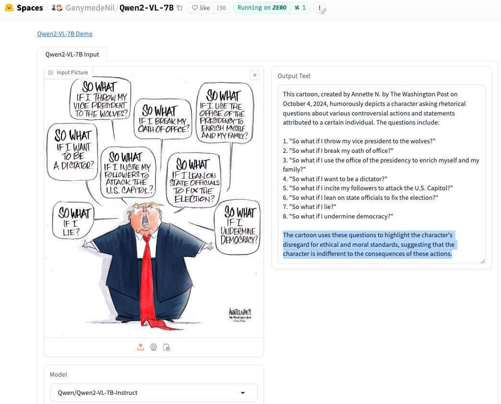

October 2024
What Qwen2-VL, a Vision Language Model, conclude: "The cartoon uses these questions to highlight the character's disregard for ethical and moral standards, suggesting that the character is indifferent to the consequences of these actions."
Link: huggingface.co/spaces/Ganymed…
Link: huggingface.co/spaces/Ganymed…

Great overview. Very impressed by @nanonets' solution when exploring modern ways to dissect the complex tables in the Schedules of Assessments (SoA) in Clinical Study Protocols. nanonets.com/blog/table-ext…